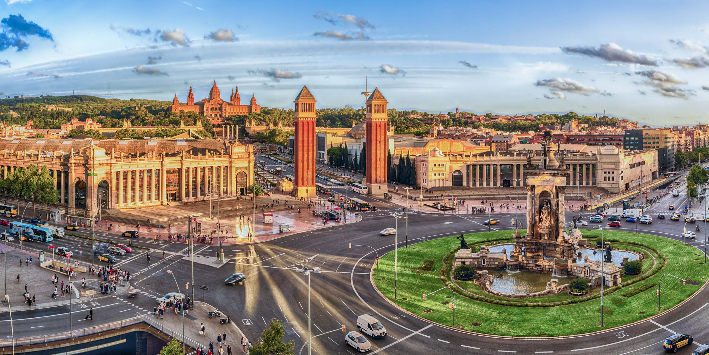
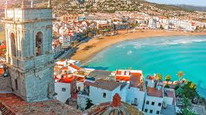

Your speed-run travel guide to Catalonia's capital
Welcome to Barcelona — a city that lives and breathes creativity, coastlines, and culture. From the surreal spires of Gaudí’s Sagrada Família to the golden sands of Barceloneta Beach, this is where centuries of history meet modern Mediterranean charm. Whether you’re here for the art, the architecture, or just a really good glass of sangria, Barcelona makes it easy to fall in love fast.
Must-See Places
Sagrada Familia--Gaudi's unfinished masterpiece
Park Guell--Mosaic art on the hillside
Barceloneta Beach--Chill out by the Mediterranean Sea
La Rambla -- Touristy, but a rite of passage
Montjuïc Hill -- Ride a cable car through the city to the top of the mountain
La Boqueria Market -- Iconic food market right near La Rambla

When To Go
Barcelona is a great place to travel to at all times of the year, but there are some specifics to each season:
Spring: Festivals and mild weather
Summer: Beaches and busy
Fall: Gorgeous colors and cooler temps
Winter: Quiet charm and Christmas markets
How to Get Around
Metro: A fast, clean, and super reliable option
Buses: Slower than the metro, but great for above-ground views
Walking: Great way to see all the sites, but be careful on the cobblestone roads
Bike or Scooter Rentals: Barcelona is super bike friendly with lots of lanes dedicated throughout the city
Taxi: An affordable option in Barcelona, look for the black and yellow cars!

If you are interested in receiving a 5 day planned itinerary PDF for your next trip email us at: